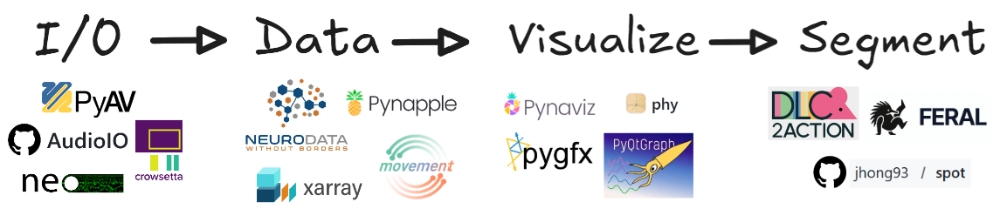

ethograph#
Ethograph is a graphical user interface for visualizing and segmenting multimodal timeseries behavioural data. It builds upon a number of open-source libraries to load and quickly render video and pose files, audio and spectrograms, ephys recordings in various formats, and arbitrary multi-dimensional timeseries — all on one shared timeline.
Note this GUI is still in development. I welcome people testing it and providing feedback!
Quickstart#
Data compatibility helper
.nwb files are self-contained — Ethograph loads them directly.Installation#
Ethograph is installed with uv, a fast Python package manager:
curl -LsSf https://astral.sh/uv/install.sh | sh
winget install astral-sh.uv
Works from both PowerShell and Command Prompt; winget is built into Windows 11.
Then install the GUI as a standalone tool — one command, no environment to create or activate:
uv tool install --python 3.12 "ethograph[gui,audio]"
To open the GUI, run:
ethograph check # Linux only : Check for missing libraries
ethograph launch
Note
For installing into a dedicated virtual environment, optional extras (segmentation models, DANDI downloads, …) and troubleshooting, see the installation guide.
After launching, there are some example datasets you can explore the GUI. To learn more about all the functionalities, I recommend the user manual.
Support#
{kind=link}

Ethograph is built on top of a number of open-source projects: PyAV, audioio, Neo [Garcia et al., 2014], crowsetta [Nicholson, 2023], Neurodata Without Borders [Rübel et al., 2022], xarray [Hoyer and Hamman, 2017], pynapple [Viejo et al., 2023], movement [Sirmpilatze et al., n.d.], phy [Rossant et al., 2016], PyQtGraph, and pygfx [Klein and others, n.d.] (via pynaviz). The models that segment behaviour build on DLC2Action [Kozlova et al., 2025], FERAL [Skovorodnikov et al., 2025] and E2E-Spot [Hong et al., 2022]. The full list is on the references page.